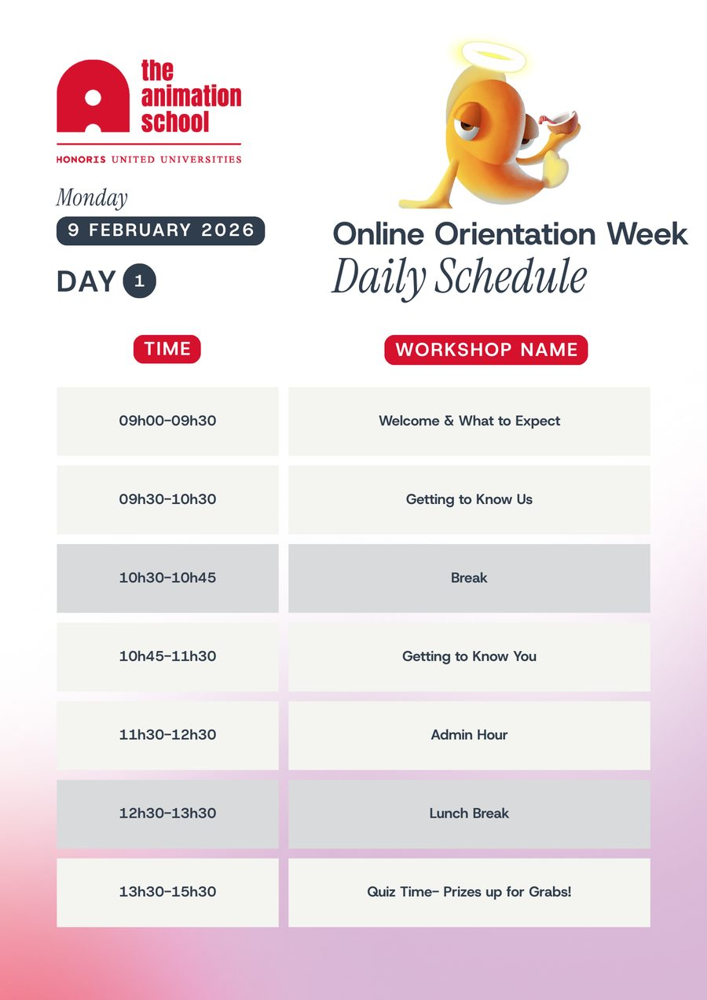
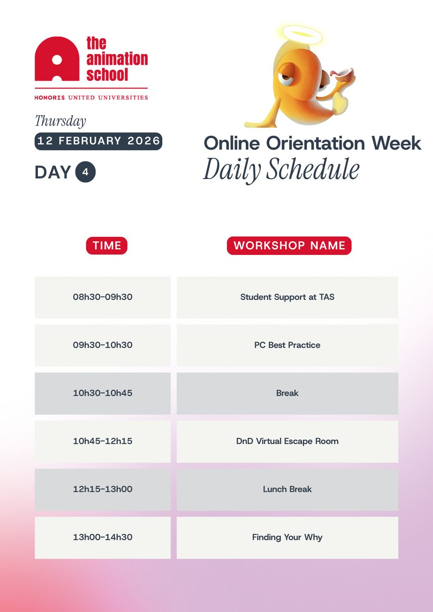
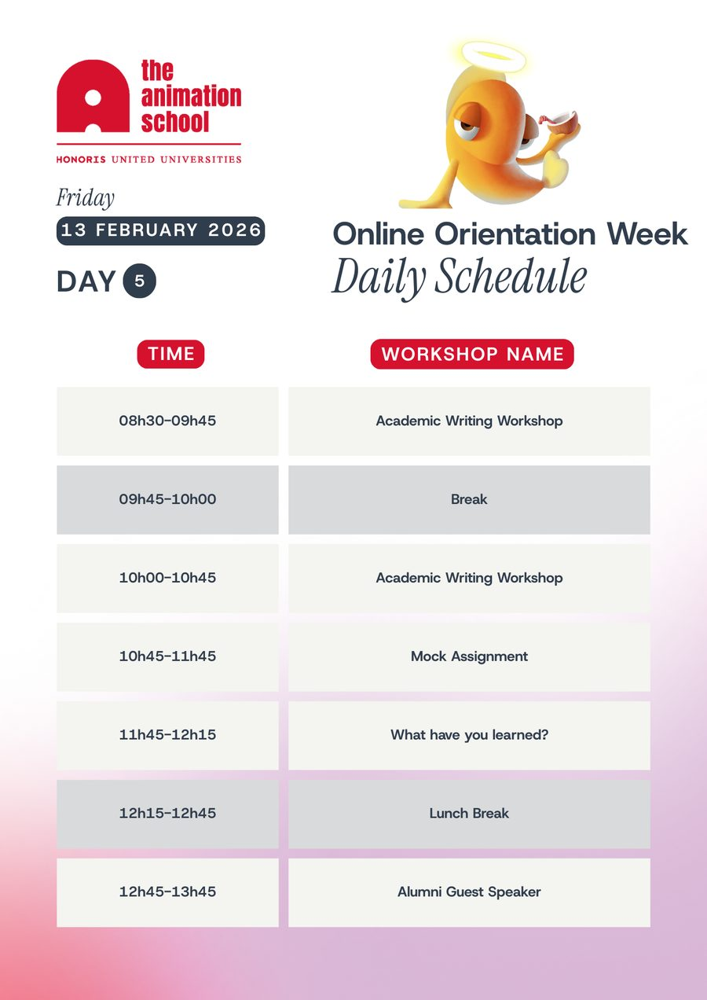

Example 1 · Belonging, culture and engagement
Creating a sense of culture online
Designing an orientation week that helped our first online students feel they belonged.
-
Context and challenge
The Animation School was welcoming its first group of online students. Campus students already had an established orientation experience; students joining remotely needed an equivalent.
The challenge was not simply to move the campus orientation online. We wanted online students to feel included, safe, connected and excited about becoming part of the institution, before they had met anyone in person.
-
My role and contribution
I designed the overall online orientation programme, and worked with lecturers to coordinate the sequencing and the practical logistics of the week.
-
Design thinking and decisions
I planned the week around Lizzio's (2006) four senses that contribute to a sense of culture. Rather than starting with everything we needed to tell students, I started with what they needed to feel: connected, resourceful, capable and clear about their purpose. Every activity was chosen to address one of the four.
A sense of connectedness
Identifying with the institution; relationships with staff and with other students.
- Getting to Know Us
- Getting to Know You
- Teaming Up
- Games and time to talk to one another
- Designing their own virtual backgrounds
A sense of resourcefulness
Knowing how student life works, and being able to access and navigate systems.
- Portal Navigation
- Student handbook and programme overview
- Student Support at TAS
- PC Best Practice
A sense of capability
Clarity about tasks and roles, academic competence, and taking part in the community.
- First-year overview
- Academic Writing Workshop
- Mock Assignment
- Practical guidance on what will be expected
A sense of purpose
Engagement with the discipline, vocational direction and personal development.
- Finding Your Why
- Alumni guest speaker
- Creative activities connecting students to their learning journey
Framework adapted from Lizzio (2006, p. 3). Activities are those in our Online Orientation Week.
Balancing information with interaction
The most important decision was about balance. Orientation can easily turn into a week of administration, and I didn't want to overwhelm students at the very start. So the schedule deliberately alternates information and practical guidance with games, interaction and breaks.

Mon Day 1: mostly connection 
Thu Day 4: support, then play, then purpose 
Fri Day 5: building capability Three of the five daily schedules from Online Orientation Week. Practical sessions such as Admin Hour and Student Support at TAS sit between relationship-building activities like Getting to Know You and the DnD Virtual Escape Room, with breaks built into every day. All five days: 1, 2, 3, 4, 5 (each opens in a new tab).
-
Learning and reflection
Feedback from students was overwhelmingly positive. One student wrote in the survey:
“This was the best week of my life.”
Using a framework changed the way I planned. It gave me a way to check the whole week for balance: had we done as much to help students feel connected as to help them find their way around the portal? It also showed me that belonging is something you can design for, even online. It doesn't depend on being in the same building.
-
Looking ahead
I'd like to explore how the four senses could carry on beyond orientation week, so that the connection students build in those first days continues into the rest of their first year.